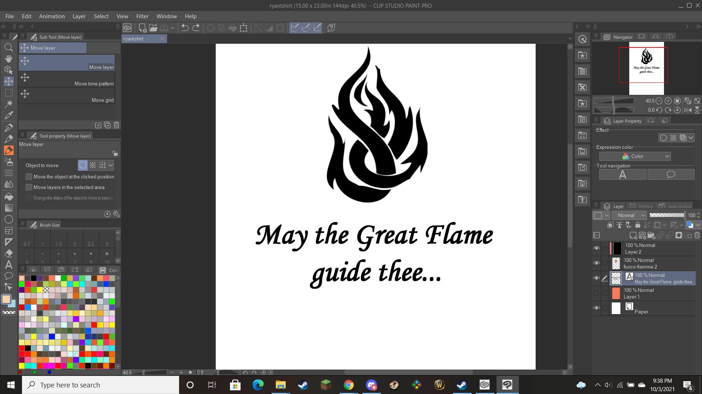

What is Vinyl Cutting?
Vinyl cutting is a very interesting form of digital fabrication. Instead of whatever machine you use creating the final product, the digital element of it is only one element in the process. Using a design you've made or an image you've found, an outline is sent to the cutter, which slices it into the vinyl you've set inside it. It is important to make sure your design is a vector image, as opposed to a raster, the difference being that vector images are made up of mathematical formulas, allowing them to portray ctraight lines, while raster images are made up of pixels, meaning any non-vertical or horizontal line will not be truly straight. You can then apply that vinyl to a surface, or using a heat press, apply it to a piece of clothing!
Making my Design
When trying to come up with something to do for my shirt, I decided to make a design based on the D&D campaign I've been in for the past two years. The religion of the setting centers around the "Great Flame," so I decided to make my shirt around that idea. I chose a cool looking fire graphic from google images, and put the quote "May the Great Flame guide thee" underneath, the sort of "May the force be with you" of the setting. Since I still do not have access to Adobe Illustrator, I used Clip Studio Paint in its stead, which worked just as well. I measured my shirt, scaled the design to the dimensions, made it a vector image, and was all set to cut!
With my design finished, I moved ahead to cutting. I put my design into sure-cuts-a-lot, making sure that it was flipped to make the text come out right, and that it was scaled properly for the material. I set the cutter to the appropriate speed and force, and then cut! It took a few tries, since the blade kept getting caught and messing up the letters, but with Tuna's help we made it work.

With the cutting complete, I removed the excess material from the sheet and got ready to use the heat press. It takes a couple minutes to warm up, but once it does, it only takes 10 seconds to apply the decal to the shirt! And that was that! My design turned out great, and I would love to use this again in the future, though hopefully something can be done to make the machine work with less errors.
Design file